Creating virtual macOS environment
TNFSH Swift教材 / 顏永進
Table of Contents
這裡簡單介紹兩個重點：在windows安裝VirtualBox、在VirtualBox新增macOS的虛擬機
1. 安裝VirtualBox
1.1. 下載 TNFSH
- 點選https://www.virtualbox.org/wiki/Downloads進入下載頁面
點選Windows hosts
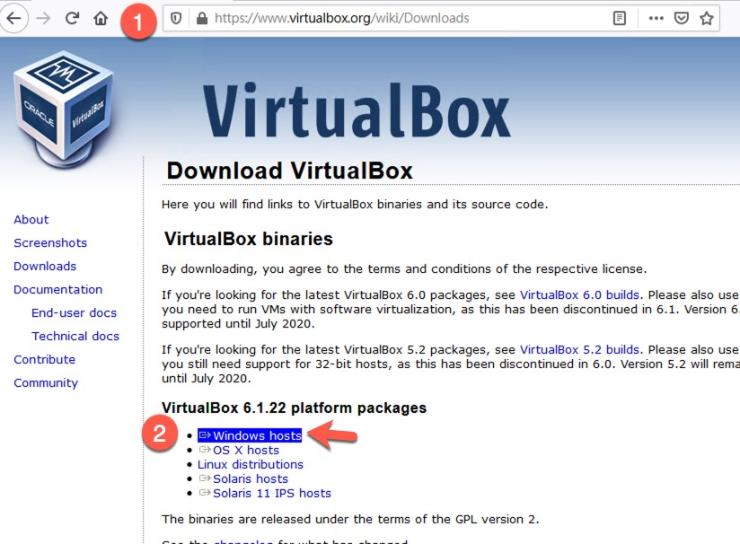
Figure 1: Caption
點選 儲存檔案 下載安裝檔
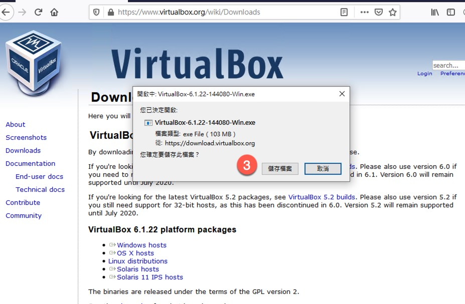
Figure 2: Caption
找到下載的安裝檔，準備安裝
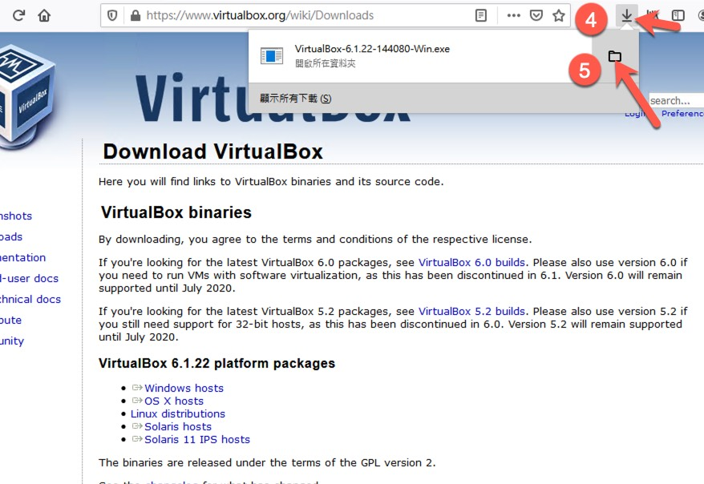
Figure 3: Caption
1.2. 安裝
執行VirtualBox-6.1.22-144080-Win 預設安裝目錄為: C:\Program Files\Oracle\VirtualBox\
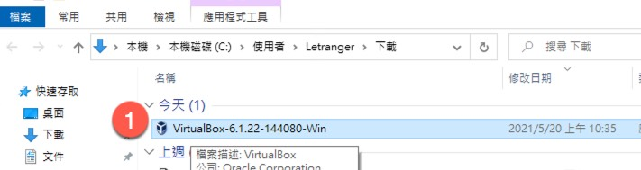
Figure 4: Caption
無腦下一步….
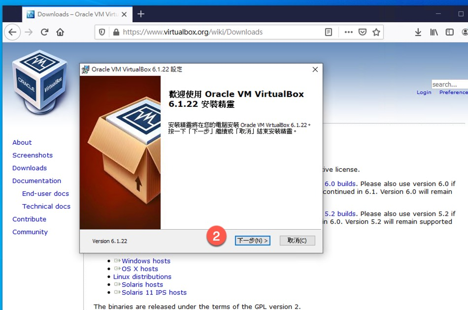
Figure 5: Caption
無腦允許/同意/是….
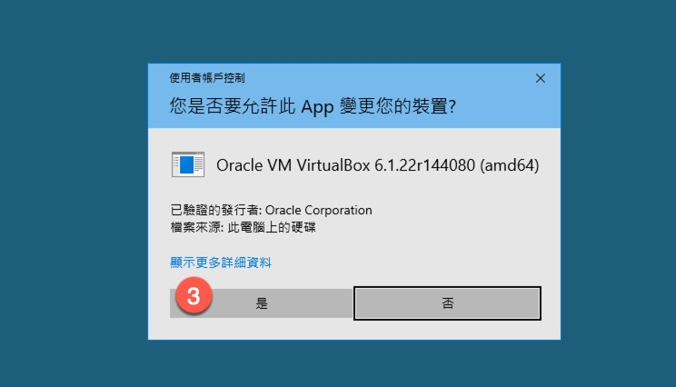
Figure 6: Caption
- 無腦完成
1.3. 安裝VirtualBox Extenstion Pack
打開剛才的VirtualBox下載網頁: https://www.virtualbox.org/wiki/Downloads
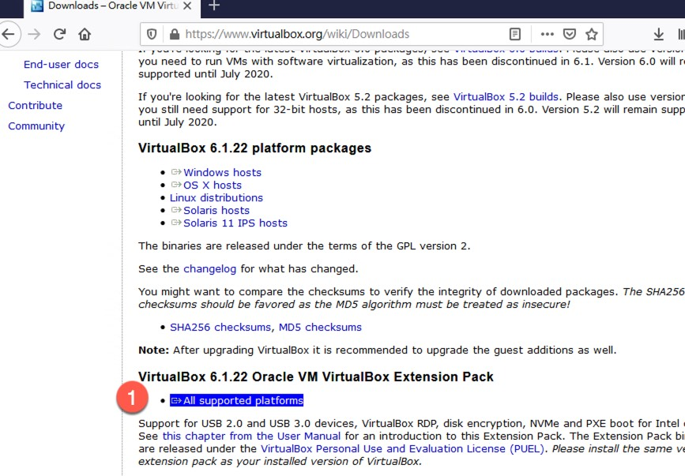
Figure 7: Caption
找到VirtualBox 6.1.22 Oracle VM VirtualBox Extension Pack、點選All supported platforms、 以VirtualBox Manager打開下載的檔案
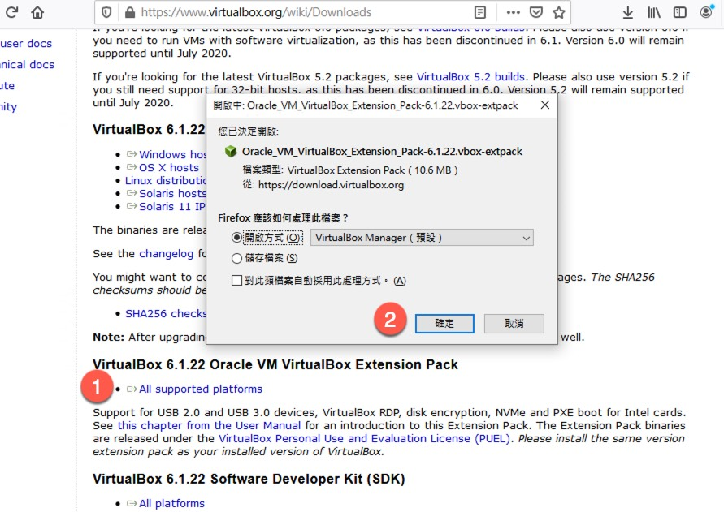
Figure 8: Caption
安裝
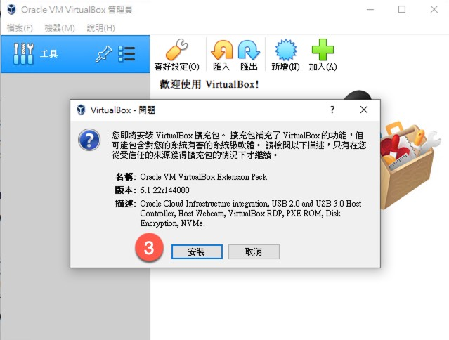
Figure 9: Caption
讀完授權說明後無腦同意
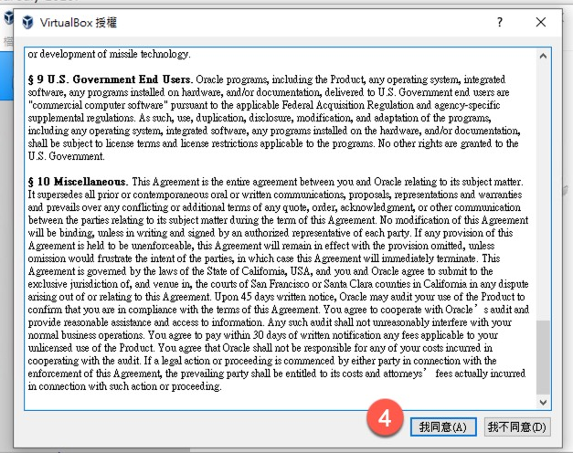
Figure 10: Caption
無腦允許
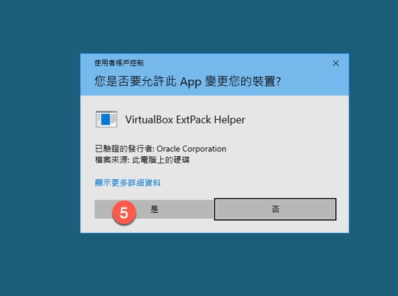
Figure 11: Caption
無腦安裝
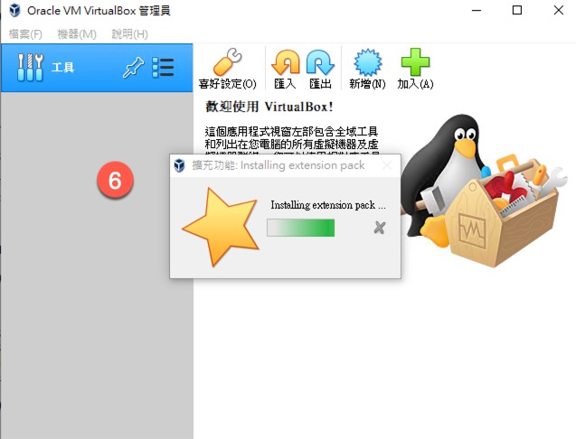
Figure 12: Caption
無腦完成
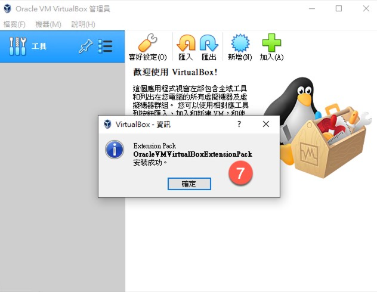
Figure 13: Caption
2. 新增macOS虛擬機
2.1. 下載macOS虛擬機映像檔
- 點選這裡可以下載映像檔，檔案有6G，下載時間視你的網路速度而定，反正應該夠去煮杯咖啡
- 我花了三分鐘下載完畢(不過我在同一區網內下載，算是作弊)，大家可以分享一下共花了多少時間才下載完
- 記得你下載的檔案位置
2.2. 新增空白虛擬機
開啟VirtualBox，點選新增、點選專家模式
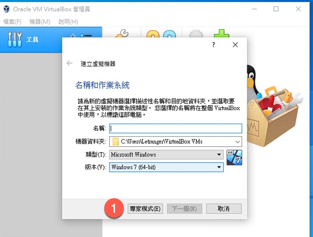
Figure 14: Caption
輸入名稱，這裡就統一定為 macOS ，等一下比較好說明
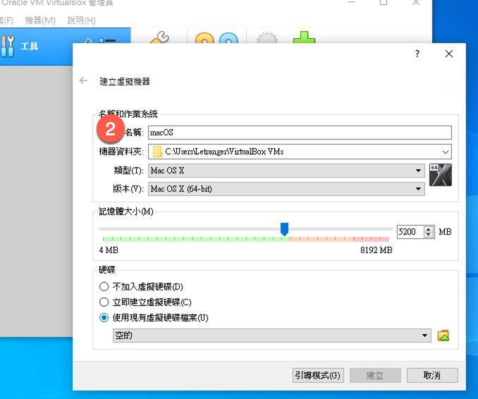
Figure 15: Caption
確定類型為 Mac OS X,版本為 Mac OS X (64-bit)
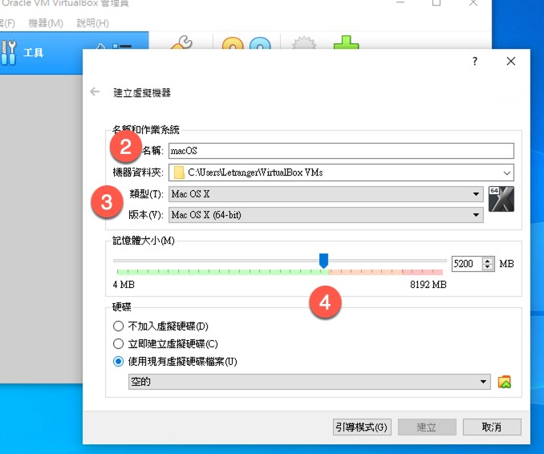
Figure 16: Caption
分一半的計憶體給這台虛擬機
Figure 17: Caption
- 建立硬碟
- 點選「使用現有虛擬硬碟檔案」
點選開啟資料夾icon
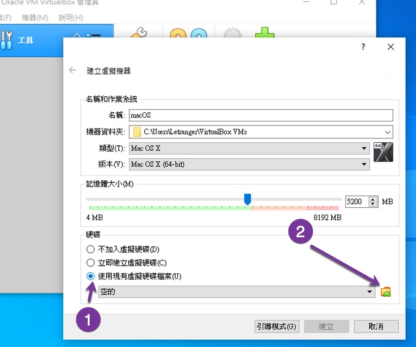
Figure 18: Caption
點選 加入(A)
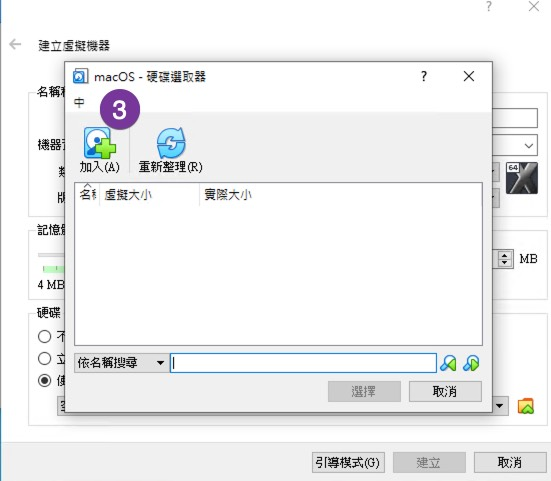
Figure 19: Caption
找到下載完的macOS虛擬機映像檔(應該在下載資料夾)，選取該檔案，點選開啟
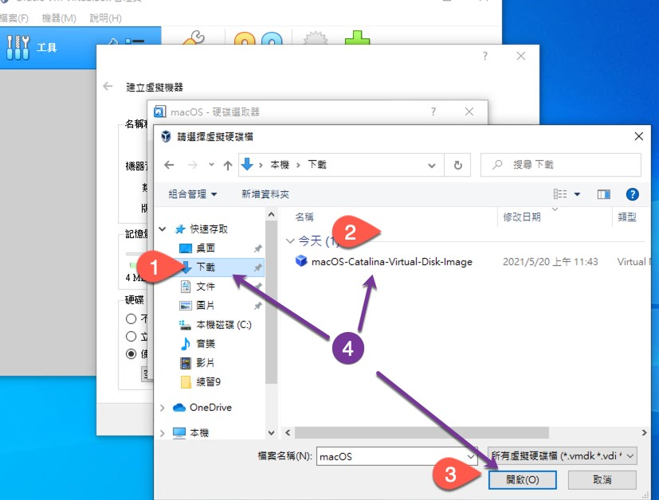
Figure 20: Caption
點選「選擇」按鈕
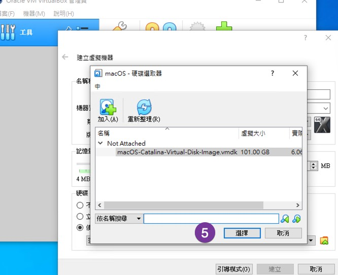
Figure 21: Caption
此時應該會出現一個硬碟檔案，按建立
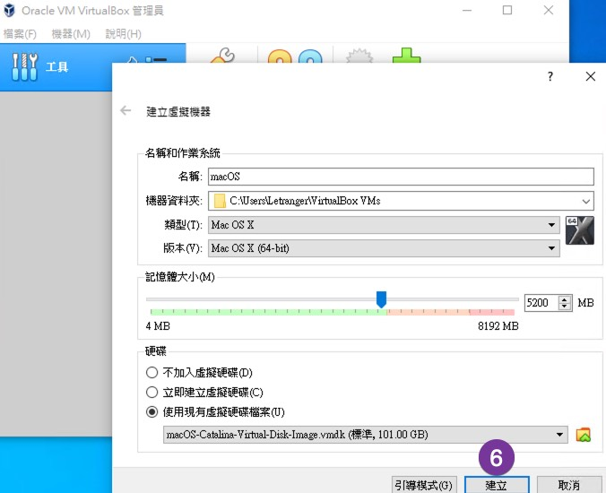
Figure 22: Caption
終於設定完成，可以喘口氣了，但是現在還不能啟動，後面大概還有幾十個步驟……
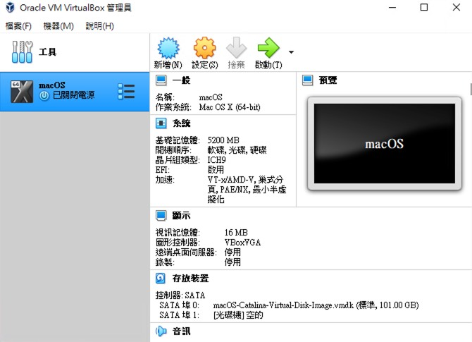
Figure 23: Caption
2.3. 執行修正程式
2.3.1. 以系統管理員身份執行 命令提示字元
在工作列搜尋欄中輸入 cmd
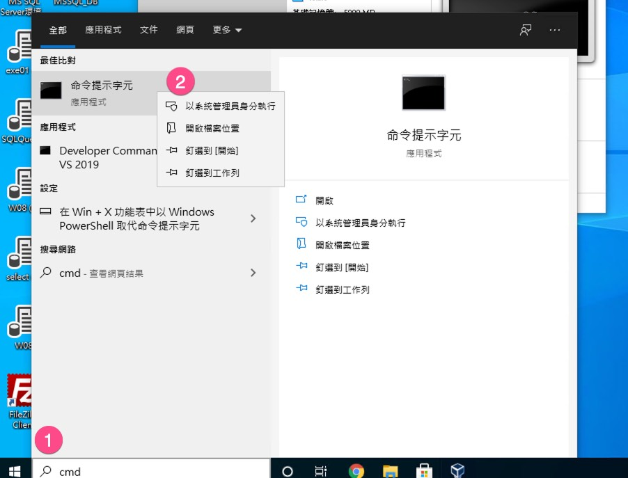
Figure 24: Caption
在上方 命令提示字元 按 右鍵 ，選擇 以系統管理員身份執行
Figure 25: Caption
2.3.2. 執行修正程式
- 設定修正程式
原本的修正程式長的像這樣，但是這裡有地方要做修正，就是所有的 Youur Virtual Machine Name 都要改成我們在上述2.2中命名的虛擬機名稱: macOS
1: cd "C:\Program Files\Oracle\VirtualBox\" 2: VBoxManage.exe modifyvm "Your Virtual Machine Name" --cpuidset 00000001 000106e5 00100800 0098e3fd bfebfbff 3: VBoxManage setextradata "Your Virtual Machine Name" "VBoxInternal/Devices/efi/0/Config/DmiSystemProduct" "iMac11,3" 4: VBoxManage setextradata "Your Virtual Machine Name" "VBoxInternal/Devices/efi/0/Config/DmiSystemVersion" "1.0" 5: VBoxManage setextradata "Your Virtual Machine Name" "VBoxInternal/Devices/efi/0/Config/DmiBoardProduct" "Iloveapple" 6: VBoxManage setextradata "Your Virtual Machine Name" "VBoxInternal/Devices/smc/0/Config/DeviceKey" "ourhardworkbythesewordsguardedpleasedontsteal(c)AppleComputerInc" 7: VBoxManage setextradata "Your Virtual Machine Name" "VBoxInternal/Devices/smc/0/Config/GetKeyFromRealSMC" 1
如果你之前是依這裡的建議一樣命名為 macOS，那你可以直接參考底下的修正碼，否則就要逐一更改(你可以把它貼進文字編輯器裡去做搜尋/取代)
1: cd "C:\Program Files\Oracle\VirtualBox\" 2: VBoxManage.exe modifyvm "macOS" --cpuidset 00000001 000106e5 00100800 0098e3fd bfebfbff 3: VBoxManage setextradata "macOS" "VBoxInternal/Devices/efi/0/Config/DmiSystemProduct" "iMac11,3" 4: VBoxManage setextradata "macOS" "VBoxInternal/Devices/efi/0/Config/DmiSystemVersion" "1.0" 5: VBoxManage setextradata "macOS" "VBoxInternal/Devices/efi/0/Config/DmiBoardProduct" "Iloveapple" 6: VBoxManage setextradata "macOS" "VBoxInternal/Devices/smc/0/Config/DeviceKey" "ourhardworkbythesewordsguardedpleasedontsteal(c)AppleComputerInc" 7: VBoxManage setextradata "macOS" "VBoxInternal/Devices/smc/0/Config/GetKeyFromRealSMC" 1
- 執行上述修正指令
將上面的修正指令 逐行 複製下來，貼到命令提示字元，然後按Enter執行。例如:
選取第一行指令，按 右鍵 選複製(C)
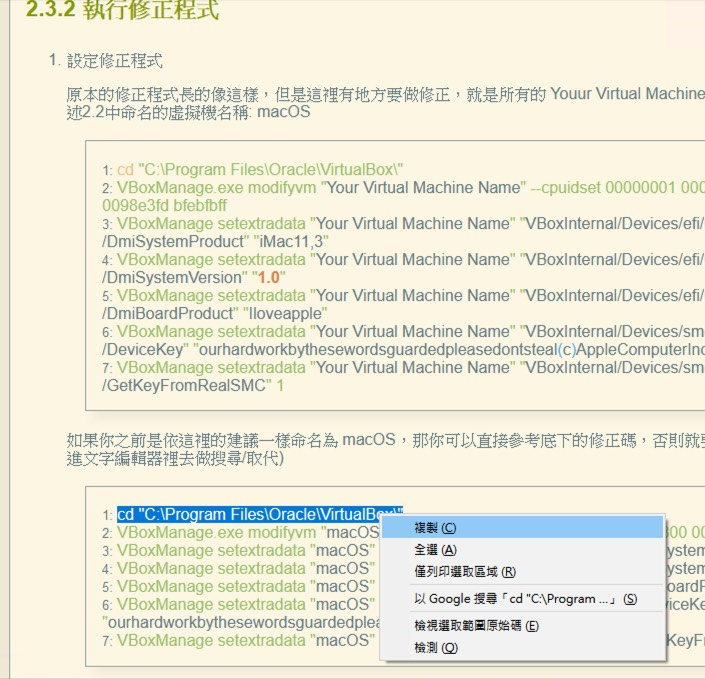
Figure 26: Caption
切換到命令提示字元，在視窗中按 右鍵 ，將複製的指令貼上去，然後按Enter執行指令
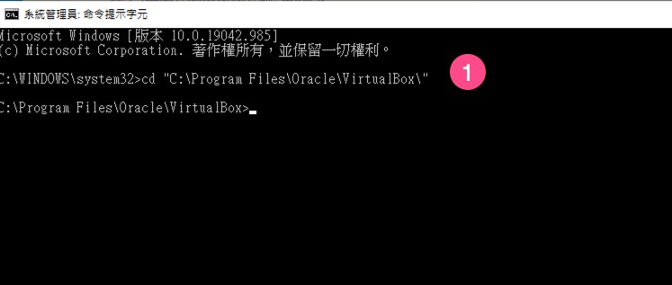
Figure 27: Caption
回到瀏覽器，複製第二行指令
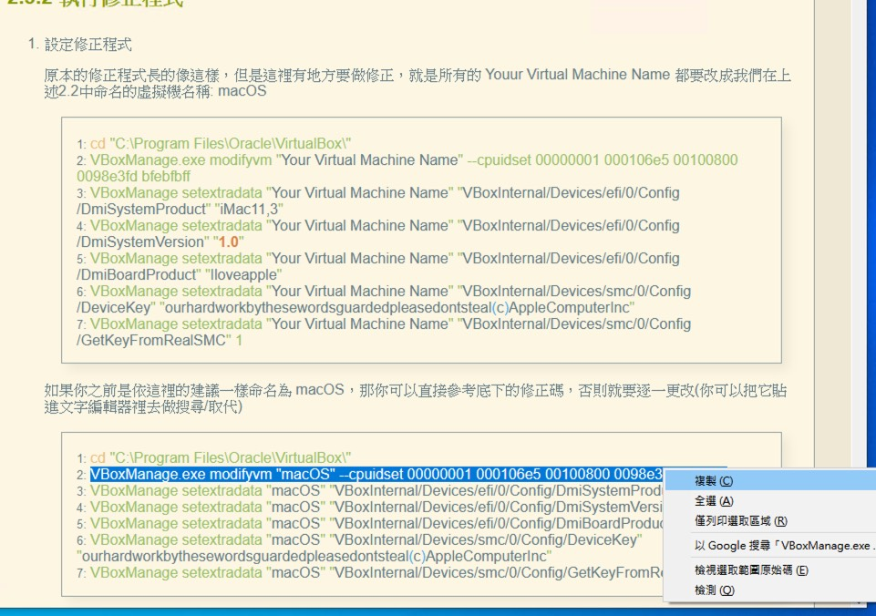
Figure 28: Caption
切換到命令提示字元，在視窗中按 右鍵 ，將複製的指令貼上去，然後按Enter執行指令
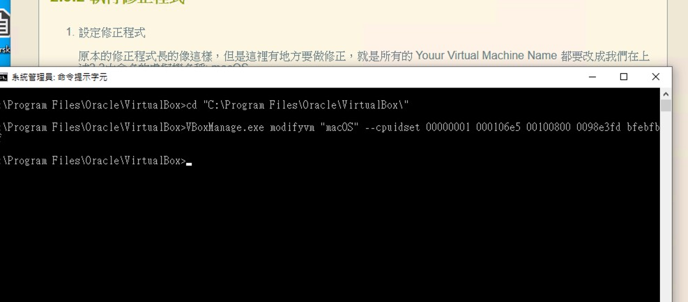
Figure 29: Caption
- 依此類推…..
2.4. 設定虛擬機
啟動VirtualBox, 點選左側 macOS ，點選右側 設定 這裡的macOS是虛擬機名稱，如果你有改名，請自改參考
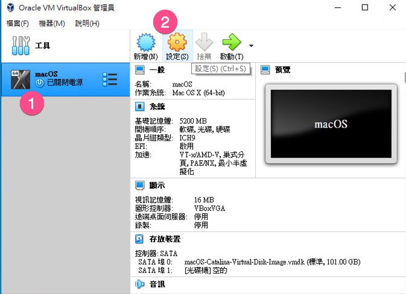
Figure 30: Caption
左側選取 一般 ，右側選取 進階 ，將 共用剪貼簿 和 拖放 都改為雙向
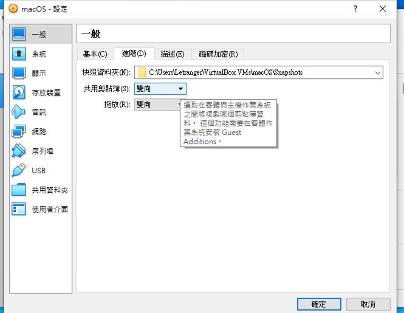
Figure 31: Caption
左側選取 系統 ，右側取消 軟碟 和 光碟
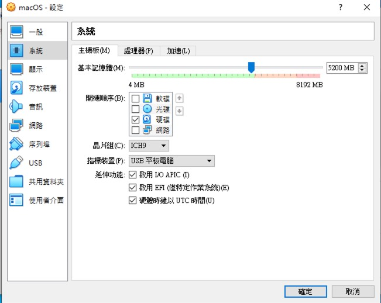
Figure 32: Caption
左側選取 顯示 ，右側將 圖形控制器 改為 VMSVGA，把上面的 *視訊記憶體 全部撥給虛擬機
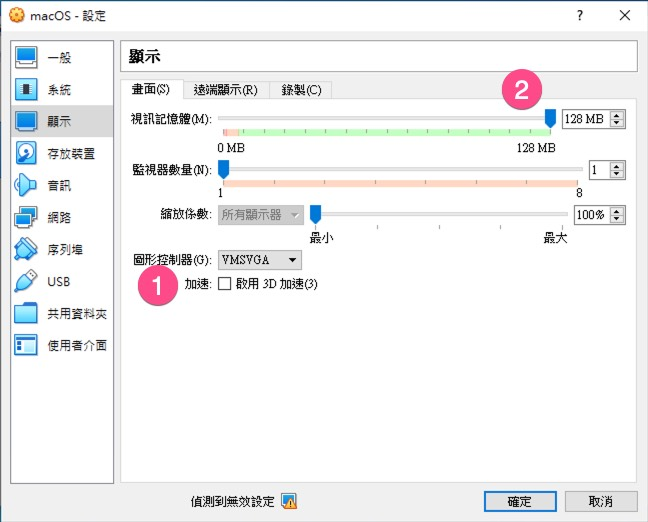
Figure 33: Caption
左側選取 USB ，右側可以點選 USB 2.0 、 USB 3.0
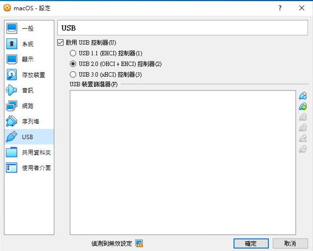
Figure 34: Caption
2.5. 首次啟動虛擬機
回到VirtualBox，左側選取 macOS ,右側點 啟動
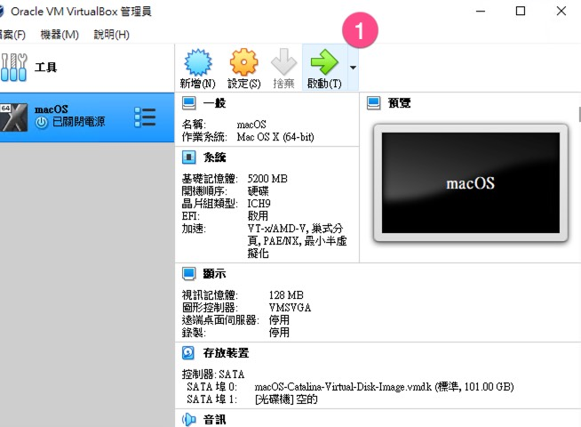
Figure 35: Caption
出現初次啟動開機畫面
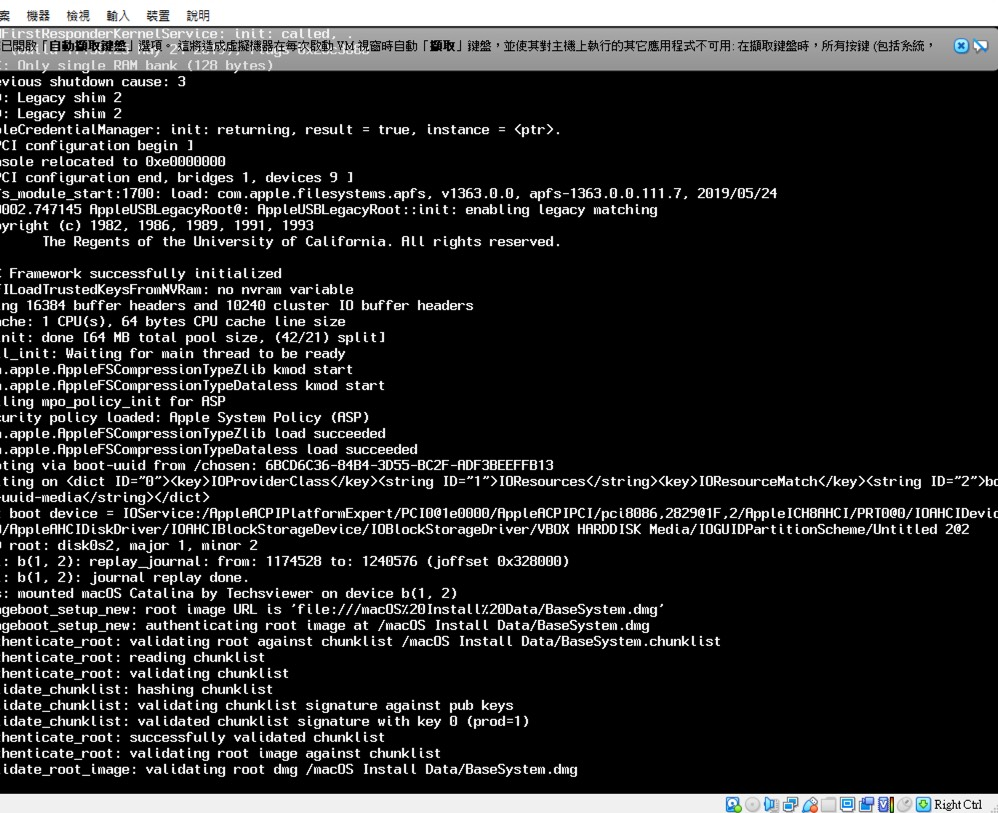
Figure 36: Caption
然後過一陣子會看到期待已久的MAC開機畫面
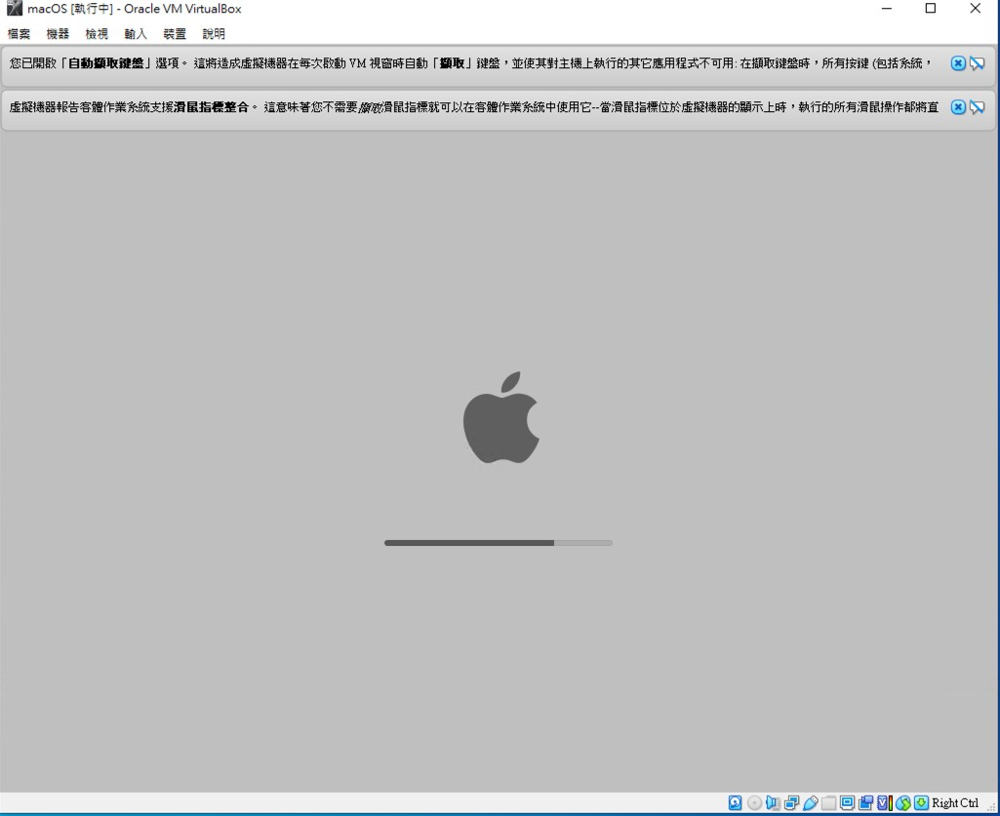
Figure 37: Caption
安裝macOS Catalina… 可以再去煮杯咖啡、上個厠所、洗個澡、再背三課單字
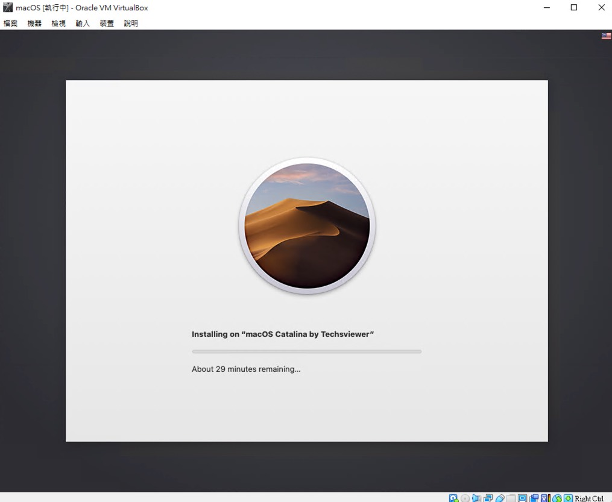
Figure 38: Caption
- 不要被上面的預估時間騙了，我盯著那個14分鐘看了10分鐘，一點也沒變化…..(不過我是在VM的虛擬機上跑，算是虛擬中的虛擬，會慢大概也不奇怪，希望大家的運氣比我好…)